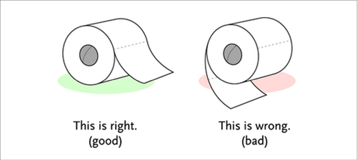

Vom richtigen Umgang mit Toilettenpapier

Sicher saß jeder von uns schonmal auf der Toilette, hatte guten Stuhlgang und wollte bloß noch entspannt abputzen - nur war das nicht möglich, da die Toilettenpapierrolle falsch eingehängt war. Nun sollte man meinen, dass jeder geistig gesunde Mensch das Klopapier intuitiv richtig einhängt, doch ist dies mitnichten so. Ob aus Unwissenheit, mangelndem Interesse oder reiner Boshaftigkeit, die Rolle hängt oftmals falsch.
Deshalb gibt es bei Popgive.com jetzt eine detaillierte Anleitung zum richtigen Aufhängen des Sch**ßhauspapieres, die wohl keine Fragen offen lassen sollte. Eine wahrhafte Bereicherung für unser aller Stoffwechsel.
(via)


11 Kommentare zu "Vom richtigen Umgang mit Toilettenpapier"
Seiten:
1
2
Seiten:
1
2
- Externe Links im selben Fenster öffnen
- Externe Links in neuem Fenster öffnen
crucible
Jahahah! Allerdings: das angeblich "falsche" Aufhängen der Rolle spart aber Papier! Selber mal ausprobieren. Es werden dann nämlich nicht so viele Blättchen abgerissen!!
Teste mal!
Herschel Rubinstein
ach, papperlapapp - falschrum ist falschrum
ps: du musst mal deine aktuelle url eingeben.
Rick
Mit Verlaub, irgendwie ein Schei**beitrag, aber irgendwer muss es ja machen. Ist ja so ein tabuisierter Bereich, jeder macht jeden Tag eine Menge Schei**, aber keiner kümmert sich einen Schei** drum den Schei** wieder richtig wegzumachen. Und bitte in asiatischen oder arabischen Ländern niemals jemandem jene Hand (oder mit dieser Hand das Essen weiterreichen) die man dort fürhin für die anale Körperpflege verwendet.
Jupp
Es spart gar kein Papier, es macht den Säuberungsakt zu einer stressigen und nervigen Angelegenheit. Ich nehme bei festen (mehrlagigem Papier)immer vier Blatt und falte es ordentlich. Ich weiß ich habe ein Toilettenpapierfaltetick, und diesen kann ich mit einer falsch aufgehängten Rolle nicht ausleben. Da muss ich mich dann dazu herab lassen und diese schei** Rolle drehen.
Also merken: der Anfang muss Vorne runter hängen und NICHT Hinten!
magnus
Hm vielleicht sollte man hier auch die verschiedenen Wisch/Falt-techniken aufführen.
Zum einen wären da die Knüddler zu nennen und zum anderen die Falter, zu der sich wohl auch Jupp zählt.
PS: In Amerika wird im übrigen mehr geknüddelt/gebündelt als in Deutschland.
Falten = sparsam!
=)
Herschel Rubinstein
@rick: so ist das hier, auf phase 5. für die leserschaft kämpfen wir uns jeden tag durch die knietiefe scheiße
@jupp: vier blatt? wozu mache ich mir dann die mühe und nehme ein blatt einlagiges, welches ich auch noch beidseitig verwende?? o_O
@magnus: das ist richtig. aber im endeffekt ist es mir egal, was die leute mit dem papier anstellen, solange die rolle richtig rum hängt.
Dean van Dildo
Ich hänge die Rolle auf wie mir gerade zu mute ist und achte da nicht weiter drauf. Ich wusst ja nicht das man daraus solch eine Wissenschaft machen kann
Herschel Rubinstein
was heißt wissenschaft. es gibt einfach zwei möglichkeiten, eine richtige und eine falsche. so schwer ist das nicht
Jupp
Apropos gibt es nicht nur Klorollen, die man falsch herum aufhängen kann. Ich habe gestern mal wieder hungrig bei EDEKA im Kaufhof eingekauft und wollte mir eine Plastetüte für Zwiebeln abrupfen, da blockiert dieses scheiß Ding! Ich wäre beinahe derartig grantig geworden, dass Personal verletzt würde. So guckte ich unter den Rollenhalter und sah, dass Jene falsch rum war und dazu noch eingeklemmt in so eine Metallzunge. Also musste ich mich dazu herab lassen dieses Ding da raus zu pfriemeln, umzudrehen und da wieder rein stopfen. Hatte ich einen Hals. Aber ich bin ja auch selber schuld, man hätte ja auch einen anderen Rollenspender nehmen können aber ich wollte mich, glaub ich insgeheim, aufregen. Naja mein Einkaufskörbchen war nach der EDEKA-Rundreise voll, mein Portem... Geldbeutel leer und ich im Großen und Ganzen zufrieden.
Herschel Rubinstein
ob klopapier, küchenpapier, plastetüten oder was auch immer - alles, was von der rolle kommt, kann falschrum eingehängt werden. das ist einfach immer ärgerlich.